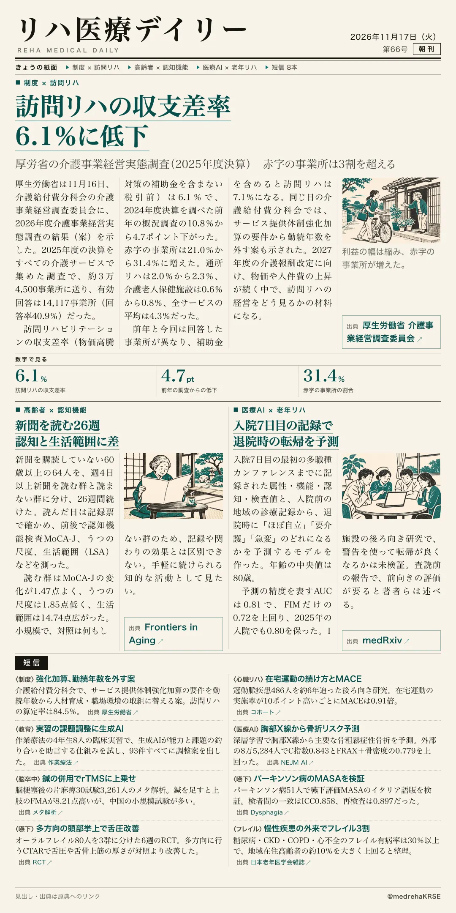
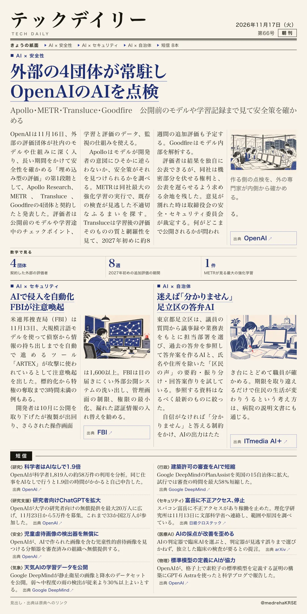

リハ医療デイリー
訪問リハの収支差率 6.1％に低下
厚労省の介護事業経営実態調査（2025年度決算） 赤字の事業所は3割を超える

テックデイリー
外部の4団体が常駐し OpenAIのAIを点検
Apollo・METR・Transluce・Goodfire 公開前のモデルや学習記録まで見て確かめる

厚労省の介護事業経営実態調査（2025年度決算） 赤字の事業所は3割を超える

Apollo・METR・Transluce・Goodfire 公開前のモデルや学習記録まで見て確かめる
